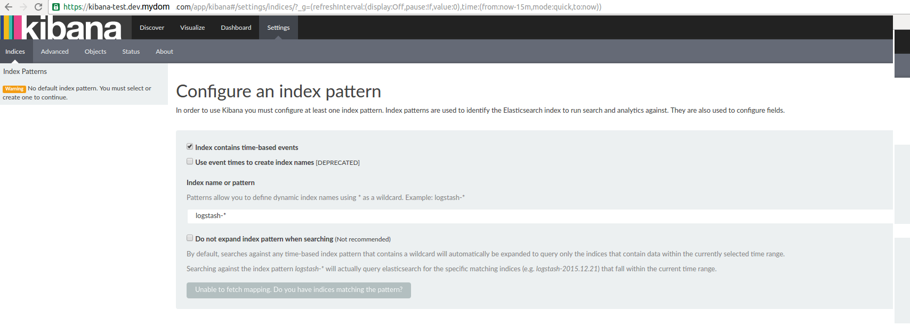
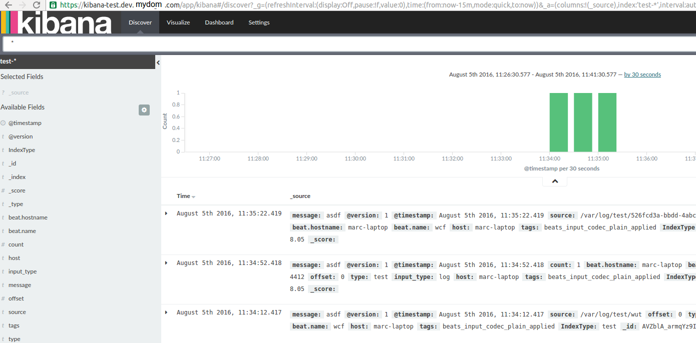

The previous part focused on getting logstash up. This one focuses on getting Kibana
Disclaimer
I’m redacting any information that might seem sensitive such as account numbers. Use your discretion and make sure you use values that make sense for things blacked out in images or in {} notation.
Part 2 - Kibana
First thing we need to do is build the container and push it to ECR.
In the ECR portion of the AWS console, create a new repository called test/kibana.
Then in your console for the kibana dockerfile run:
1 2 3 4 5 | |
Once this is pushed you can verify it by looking for a tag latest in your test/kibana ECR repository.
Next upload this cloudformation template to Cloudformation (modifying the parameters as you need).
It will look almost exactly like the logstash upload in terms of parameters.
You now have a kibana instance! My next step would be to configure a Route53 domain name to point to the kibana load balancer so you can have real SSL without any chain issues.
Takeaways
Similar to what we did with elasticsearch and logstash, kibana is listening on port 5601 via HTTPS. It uses self-signed SSL certificates. The dockerfile is actually identical to the verified one on the Dockerhub, except I expanded the docker-entrypoint.sh to take more parameters since the base one doesn’t allow much configurability: https://github.com/docker-library/kibana/pull/45
If you browse to your ELB or route53 entry on port 443, you’ll be greeted by kibana.

If you configure your index to test-* your dashboard will show the logs Logstash ingested!
